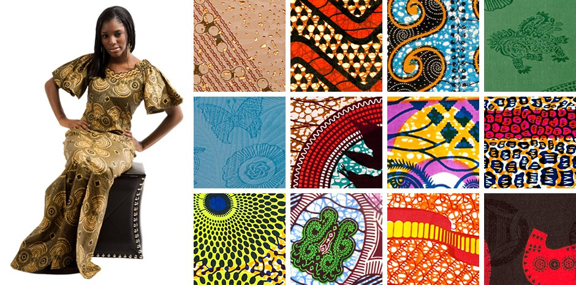
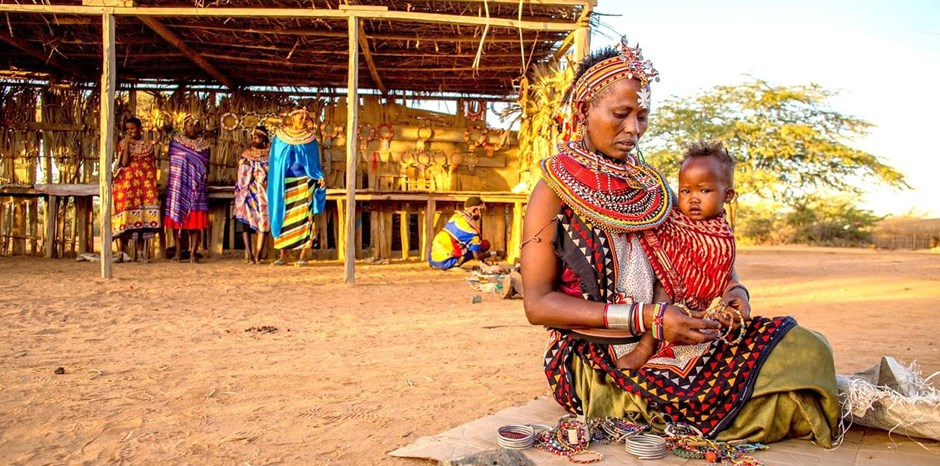

Cloths
African cloths are a very big thing in Ghana.The colors are so beautiful and unique.African cloths can be used to make dresses,tops,pants,skirts,bags and shoes.Isn't that amazing?I know right! I personally love African cloths,it makes me feel very"cultural"lol. It brings out the African side of me.
Dances
Dance is a very important part of the African culture.Especially in Ghana where people dance post of the time. Dances are performed at weddings,parties, and funerals. I found my passion for African dancing when I went to Ghana for 4 LONG years Dancing has been a big part of my life since then. I LOVE IT!

Beads
BEADS!!!OMG!They are so beautiful. The ones on the woman's neck are very significant In Ghana some beads are use for royalty. The King's and Queen's. The beads can also be used for just regular jewelry.Beads are just fun to have it makes everything so beautiful.I used to where them around my waist as a child. I really don't know what it meant but it was a tradition for all young girls.
